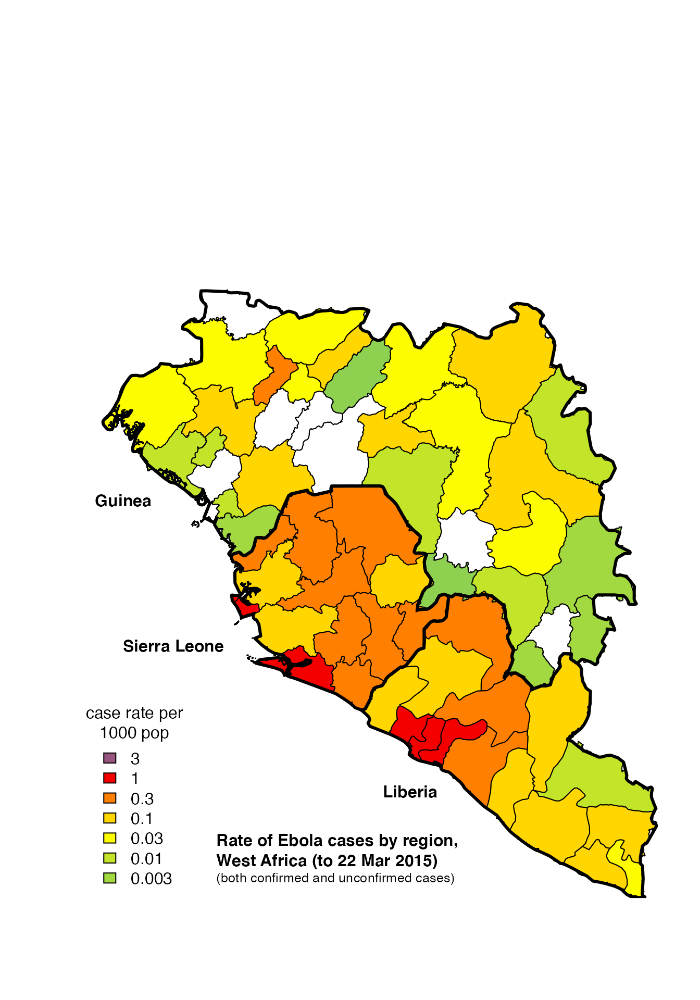

Ebola Map Example
Robin Winstanley
July 14, 2015
Source:vignettes/articles/ebolamap.Rmd
ebolamap.RmdBackground
The Ebola Map described in the following was created as a response to a map seen online, created by Robert Johnston. This map seemed interesting to me and I decided to go about recreating it, with help from the MazamaSpatialUtils package by Mazama Science. The map details the number of Ebola cases per 1,000 residents in each of the countries of Guinea, Sierra Leone, and Liberia. These cases are comprised of both confirmed and unconfirmed cases, as recorded by the World Health Organization. The data used for the graph was also given on the website.

Preliminary Mapping
The first step in recreating this graph, after loading the appropriate data and setting my directory was to identify the border of each country from the TMWorldBorders data. This was done through taking a subset of the TMWorldBorders data that referred to the three countries of interest. The borders between the countries could then be plotted, with thicker lines used to further distinguish the borders.
## Loading required package: sp
library(sp)
setSpatialDataDir('~/Data/Spatial') # Use your own Spatial Data directory
loadSpatialData('TMWorldBorders')
df <- TMWorldBorders@data
ebolaCountries <- subset(df,countryName %in% c('Liberia', 'Sierra Leone', 'Guinea'))
countryCodes = ebolaCountries[,2]
ebolaCountries <- subset(TMWorldBorders, countryName %in% c('Liberia', 'Sierra Leone', 'Guinea'))
plot(ebolaCountries, lwd=3)
The next step was to use the convertGADM function to download the required country data from the GADM database at the correct level. The map uses the provinces of Guinea (level 2), the provinces of Sierra Leone (level 2), and the counties of Liberia (level 1).
convertGADM(countryCode=countryCodes[1], admLevel=2)## Saving full resolution version...
loadSpatialData('GADM_GN_2')
convertGADM(countryCode=countryCodes[2], admLevel=1)## Saving full resolution version...
loadSpatialData('GADM_LR_1')
convertGADM(countryCode=countryCodes[3], admLevel=2)## Saving full resolution version...
loadSpatialData('GADM_SL_2')Now that we have each country of interest divided into provinces/counties, we are ready to proceed to data acquisition regarding Ebola cases and their use in our map.
Acquiring Data
Using rvest, we acquire the necessary Ebola counts per province/county in one central table. While the table also includes information for a 2014 population estimate and the total number of Ebola cases, we are solely interested in the column referring to cases/1000 pop as this is what we will be graphing.
url <- "http://www.johnstonsarchive.net/policy/westafrica-ebola.html"
ebolaTable <- MazamaCoreUtils::html_getTable(url, index = 3)Using this table, we can sort the cases/100 pop for each province/county into seven levels, which we pull from the original graph in order to achieve as close a copy as possible. Note that these levels are not linear. We also pull the colors used in the legend of the original graph, again with the goal of providing a close match to the original graph. We sort the data into these seven levels, with corresponding colors. We also add to the end an additional color, the color white, in order to take into account those values from the data which are NA (Values of NA indicate that there were 0 Ebola cases reported, resulting in a NA value for cases/100 pop).
breaks <- c(.003,.01,.03,.1,.3,1,3,10)
colorIndices <- .bincode(ebolaTable[c(2:16,20:34,38:78),4], breaks)## Warning in .bincode(ebolaTable[c(2:16, 20:34, 38:78), 4], breaks): NAs
## introduced by coercion
colorIndices[is.na(colorIndices)] <- 9
colors <- c('#8ed150','#a2d840','#c2e529','#fdfd00','#ffd600','#ff8000','#f40000','#97547e','#ffffff')Running this code gives us the error, “NAs introduced by coercion.” We can ignore this error, as we account for the NA values in the next line.
Applying Data to Map
Now that we have sorted our data into categories, we can refer to our preliminary mappings to proceed in adding our chosen colors to the graph. As we have already labeled the data by level and assigned corresponding colors, we simply plot the GADM data for each country, adding the new plot on top of what we have already created. However, adding the colorization for each country has overridden the original borders between the countries, so we must add them back using our original plot containing only the country outlines, not the provinces/counties.
We are almost there! Our graph is looking very similar to the original graph, but it is missing a few crucial pieces. We add a legend defining our use of color, as well as labels for each country, and a title for the graph.
plot(GADM_GN_2, col=colors[colorIndices[31:71]])## Warning in wkt(obj): CRS object has no comment
plot(GADM_LR_1, col=colors[colorIndices[1:15]], add=TRUE)
plot(GADM_SL_2, col=colors[colorIndices[16:30]], add=TRUE)
plot(ebolaCountries, lwd=3, add=TRUE)
legend('bottomleft', legend=rev(breaks[1:7]), fill=rev(colors[1:8]), bty='n', title='case rate per\n1000 pop')
text(-10.8,5.8,'Liberia', font=2)
text(-14.1,7.8,'Sierra Leone', font=2)
text(-14.8,9.8,'Guinea', font=2)
text(-12.5,4.8, 'Rate of Ebola cases by region,\nWest Africa (to 22 Mar 2015)', font=2)
text(-12.5, 4.3,'(both confirmed and unconfirmed cases)', cex=.8, xpd=NA)
Variations between the Graphs
Our graph is very similar to the original graph, which we were trying to mimic. The main difference lies in the use of color. The original graph uses a continuous color scheme, providing a label for a limited number of the colors used. In contrast, our graph limits itself to six distinct colors, which are used both in the legend and in the graph itself.